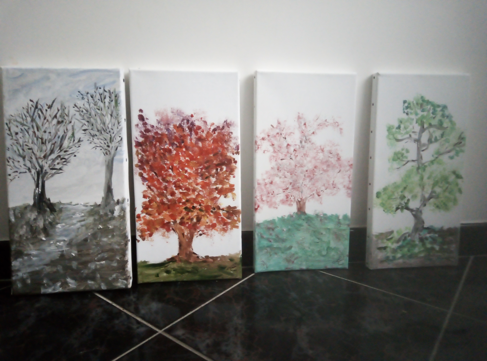

Objectifs : réduire l’anxiété, désensibiliser les stimuli anxiogènes, mobiliser la capacité à renforcer le métabolisme, travail de prise de conscience de stratégies pour soulager certains symptômes….
Offre / Accompagnement en oncologie
Objectifs : réduire l’anxiété, désensibiliser les stimuli anxiogènes, mobiliser la capacité à renforcer le métabolisme, travail de prise de conscience de stratégies pour soulager certains symptômes….
